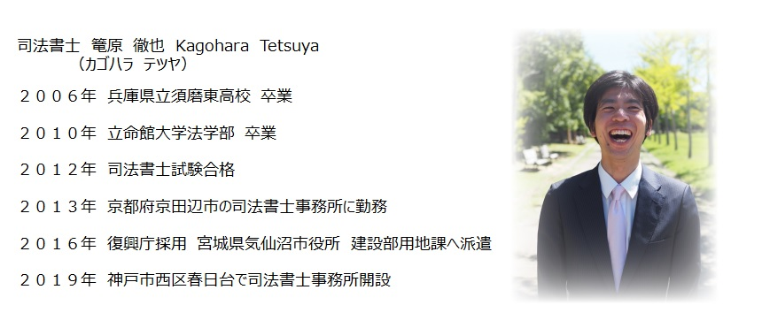

高校生までを事務所の所在地である神戸市西区で過ごしました。（春日台小学校・平野中学校卒業）
大学は京都の立命館大学に進学。
「せっかく京都に来たのだから、京都らしいことを」
と思い京都の五花街のひとつの街の洋食屋でアルバイトをする。
そこで接客についていろいろと勉強させて頂きました。
大学のゼミ（法社会学）で司法書士の仕事を知り、受験勉強開始。
試験合格後、京都府京田辺市の司法書士事務所で３年間勤務。
不動産登記・商業登記について幅広く経験させて頂きました。
「阪神淡路大震災を経験した自分なら、東北の復興に何か役立てるのではないか？」と思い、
２０１６年６月より宮城県の気仙沼市で東日本大震災のからの復旧・復興事業に従事。
道路・防潮堤・漁港・災害公営住宅の整備に関する用地取得に関し、司法書士の観点から携わる。
気仙沼での任期満了後、地元である神戸市西区春日台で司法書士事務所開設。
事 務 所 名 カゴハラテツヤ司法書士事務所
代 表 者 司法書士 篭原 徹也
兵庫県司法書士会 登録番号２１９８号
簡裁訴訟代理関係業務認定番号１２１２１３９号
所 在 地 〒６５１－２２７６
兵庫県神戸市西区春日台１丁目１７番地４
電 話 番 号 ０７８－２２４－１７４６